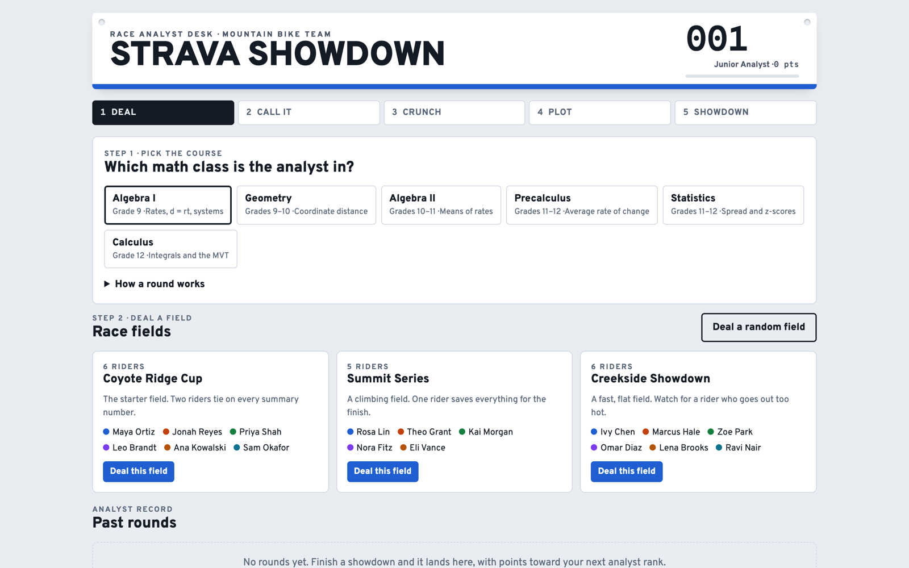

Strava Showdown
A race-analyst game: students call the podium from a field of riders' ride data, crunch each rider's stats, plot them on a distance–time graph, and defend their final call with numbers.

overview
Students sit at the race analyst's desk for a mountain-bike team. They're dealt a field of riders and a brief saying what the team is selecting for, lock in a podium prediction before doing any math, then compute each rider's stats and plot every rider on a distance–time graph, where slope is speed. The round ends with the coach's question, answered with numbers and the graph, and a final podium.
The same game runs at six levels: Algebra I (rates, d = rt, systems), Geometry (coordinate distance), Algebra II (means of rates), Precalculus (average rate of change), Statistics (spread and z-scores) and Calculus (integrals and the Mean Value Theorem).
details
- Deal — a field of riders and a race brief.
- Call it — predict the podium before any math; it locks in.
- Crunch — compute each rider's stats on the analyst sheet, plus one problem for the class.
- Plot — plot each rider on a distance–time graph.
- Showdown — answer the coach's question with numbers and the graph, then give the final podium.